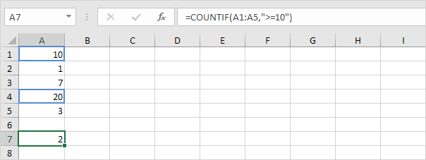
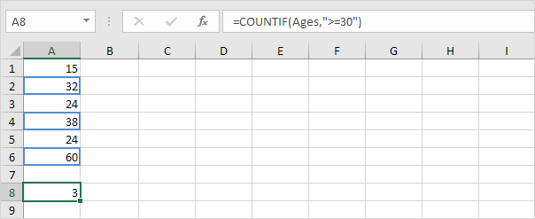
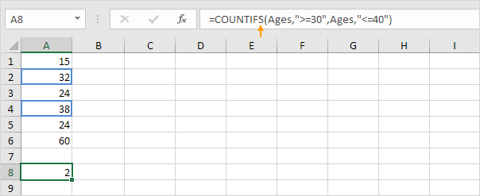

Fungsi COUNTIF yang kuat di Excel menghitung sel berdasarkan satu kriteria. Halaman ini berisi banyak contoh COUNTIF yang mudah diikuti.
 unduh file countif dan coba masukkan fungsi-fungsi ini.
unduh file countif dan coba masukkan fungsi-fungsi ini.
Kriteria Numerik
Gunakan fungsi COUNTIF di Excel untuk menghitung sel yang sama dengan nilai, menghitung sel yang lebih besar atau sama dengan nilai, dll.
1. Fungsi COUNTIF di bawah ini menghitung jumlah sel yang sama dengan 20.

2. Fungsi COUNTIF berikut memberikan hasil yang sama persis.

3. Fungsi COUNTIF di bawah ini menghitung jumlah sel yang lebih besar atau sama dengan 10.

4. Fungsi COUNTIF berikut memberikan hasil yang sama persis.

Penjelasan: operator & menggabungkan simbol greater than or equal to dan nilai di sel C1.
5. Fungsi COUNTIF di bawah ini menghitung jumlah sel yang tidak sama dengan 7.

6. Fungsi COUNTIF di bawah ini menghitung jumlah sel yang sama dengan 3 atau 7.

Trik Teks
Gunakan fungsi COUNTIF di Excel dan beberapa trik untuk menghitung sel yang berisi teks tertentu. Selalu sertakan teks dalam tanda kutip ganda.
1. Fungsi COUNTIF di bawah ini menghitung jumlah sel yang berisi persis bintang.

2. Fungsi COUNTIF di bawah ini menghitung jumlah sel yang berisi persis bintang + 1 karakter. Tanda tanya (?) cocok dengan tepat satu karakter.

3. Fungsi COUNTIF di bawah ini menghitung jumlah sel yang berisi persis bintang + serangkaian karakter nol atau lebih. Tanda bintang (*) cocok dengan serangkaian karakter nol atau lebih.

4. Fungsi COUNTIF di bawah ini menghitung jumlah sel yang mengandung bintang dengan cara apa pun.

5. Fungsi COUNTIF di bawah ini menghitung jumlah sel yang berisi teks.

Hitung Boolean
Gunakan fungsi COUNTIF di Excel untuk menghitung nilai Boolean (TRUE atau FALSE).
1. Fungsi COUNTIF di bawah ini menghitung jumlah sel yang berisi Boolean TRUE.

2. Fungsi COUNTIF di bawah ini menghitung jumlah sel yang berisi Boolean FALSE.

Hitung Kesalahan (Count Errors)
Gunakan fungsi COUNTIF di Excel untuk menghitung kesalahan tertentu.
1. Fungsi COUNTIF di bawah ini menghitung jumlah sel yang berisi #NAME? kesalahan.

2. Rumus array di bawah ini menghitung jumlah total kesalahan dalam Range sel.

Catatan: selesaikan rumus array dengan menekan Ctrl+Shift+Enter. Excel menambahkan kurung kurawal {}. Kunjungi halaman kami tentang Menghitung Kesalahan untuk petunjuk terperinci tentang cara membuat rumus array ini.
And (Dan) Kriteria
Menghitung dengan kriteria Dan di Excel itu mudah. Fungsi COUNTIFS (dengan huruf S di akhir) di Excel menghitung sel berdasarkan dua atau lebih kriteria.
1. Misalnya, untuk menghitung jumlah baris yang berisi Google dan Stanford, cukup gunakan fungsi COUNTIFS.

Or (Atau) Kriteria
Menghitung dengan kriteria Or di Excel bisa jadi rumit.
1. Fungsi COUNTIF di bawah ini menghitung jumlah sel yang berisi Google atau Facebook (satu kolom). Tidak ada ilmu roket sejauh ini.

2. Namun, jika Anda ingin menghitung jumlah baris yang berisi Google atau Stanford (dua kolom), Anda tidak bisa begitu saja menggunakan fungsi COUNTIF dua kali (lihat gambar di bawah).

Catatan: baris yang berisi Google dan Stanford dihitung dua kali, tetapi seharusnya hanya dihitung sekali. 4 adalah jawaban yang kita cari.
3. Rumus array di bawah ini berhasil.

Catatan: selesaikan rumus array dengan menekan Ctrl+Shift+Enter. Excel menambahkan kurung kurawal {}. Kunjungi halaman kami tentang Menghitung dengan Atau Kriteria untuk instruksi terperinci tentang cara membuat rumus array ini.
Lebih lanjut tentang Countif
Fungsi COUNTIF adalah fungsi yang hebat. Mari kita lihat beberapa contoh keren lainnya.
1. Fungsi COUNTIF di bawah ini menggunakan Range bernama. Range bernama Ages mengacu pada Range A1:A6.
COUNTIF dan Range Bernama">
2. Fungsi COUNTIF di bawah ini menghitung jumlah sel yang kurang dari rata-rata usia (32,2).

3. Untuk menghitung sel di antara dua angka, gunakan fungsi COUNTIFS (dengan huruf S di akhir).

4. Gunakan fungsi COUNTIF untuk menghitung berapa kali setiap nilai muncul dalam Range bernama Ages.

Catatan: sel B2 berisi rumus =COUNTIF(Usia,A2), sel B3 =COUNTIF(Usia,A3), dll.
5. Tambahkan fungsi IF untuk menemukan duplikatnya.

Tips: gunakan COUNTIF dan pemformatan bersyarat untuk menemukan dan menyorot duplikat di Excel.
Hitung Magic
Fungsi COUNTIF tidak dapat menghitung berapa kali kata tertentu muncul dalam sel atau Range sel. Yang kita butuhkan hanyalah sedikit Magic!
1. Rumus di bawah ini menghitung berapa kali kata "dog" muncul di sel A1.

2. Rumus di bawah ini menghitung berapa kali kata "dog" muncul dalam Range A1:A2.

Catatan: kunjungi halaman kami tentang menghitung kata untuk mempelajari lebih lanjut tentang rumus ini.
Contoh ini menunjukkan Anda bagaimana untuk menghitung kosong dan tidak kosong sel di Excel.
unduh file Hitung Sel Kosong-Tidak Kosong dan coba masukkan fungsi-fungsi ini.
1. Fungsi COUNTBLANK di bawah ini menghitung jumlah sel kosong dalam Range A1:A7.
2. Fungsi COUNTA di bawah ini menghitung jumlah sel yang tidak kosong dalam Range A1:A7. COUNTA adalah singkatan dari hitung semua.

3. Fungsi COUNTIFS di bawah ini menghitung jumlah sel kosong dalam Range B1:B7 dengan satu kriteria tambahan (biru).

Penjelasan : fungsi COUNTIFS (dengan huruf S di akhir) di Excel menghitung sel berdasarkan dua atau lebih kriteria. Gunakan string kosong (dua tanda kutip ganda tanpa apa pun di antaranya) untuk menemukan sel kosong.
4. Fungsi COUNTIFS di bawah ini menghitung jumlah sel tidak kosong dalam Range B1:B7 dengan satu kriteria tambahan (merah muda).

Pelajari cara menghitung jumlah karakter dalam sel atau rentang sel dan cara menghitung berapa kali karakter tertentu muncul dalam sel atau rentang sel.
1. Fungsi LEN di Excel menghitung jumlah karakter dalam sel.

Penjelasan: fungsi LEN menghitung 2 angka, 1 spasi dan 6 huruf.
2. Gunakan SUM dan LEN untuk menghitung jumlah karakter dalam rentang sel.
Catatan: seperti yang dapat Anda bayangkan, rumus ini bisa menjadi sangat panjang.
3. Rumus array di bawah ini menghitung jumlah karakter dalam rentang sel.
Catatan: selesaikan rumus array dengan menekan Ctrl+Shift+Enter. Excel menambahkan kurung kurawal {}. Konstanta array {9;4;6;5} digunakan sebagai argumen untuk fungsi SUM, memberikan hasil 24. Mungkin ini satu langkah terlalu jauh untuk Anda pada tahap ini, tetapi ini menunjukkan kepada Anda salah satu dari banyak lainnya fitur canggih yang ditawarkan Excel.
4. Gunakan LEN dan SUBSTITUTE untuk menghitung berapa kali karakter tertentu (dalam contoh ini, karakter a) muncul dalam sel.

Penjelasan: fungsi SUBSTITUTE menggantikan karakter a (argumen kedua) dengan string kosong (argumen ketiga). LEN(SUBSTITUTE(A1,"a","")) sama dengan 8 (panjang string tanpa karakter a). Jika kita mengurangi angka ini dari 9 (jumlah total karakter di sel A1), kita mendapatkan jumlah kemunculan karakter a di sel A1.
5. Rumus array di bawah ini menghitung berapa kali karakter tertentu (dalam contoh ini, karakter a) muncul dalam rentang sel.

Catatan: selesaikan rumus array dengan menekan Ctrl+Shift+Enter. Excel menambahkan kurung kurawal {}. Konstanta larik {1;1;2;1} digunakan sebagai argumen untuk fungsi SUM, memberikan hasil 5. Fungsi SUBSTITUTE peka huruf besar/kecil. A di Alaska tidak dihitung.
6. Rumus array di bawah ini menghitung kemunculan huruf kecil dan huruf besar dari karakter tertentu (dalam contoh ini, karakter a).
Penjelasan: Fungsi LOWER mengubah semua huruf menjadi huruf kecil terlebih dahulu.